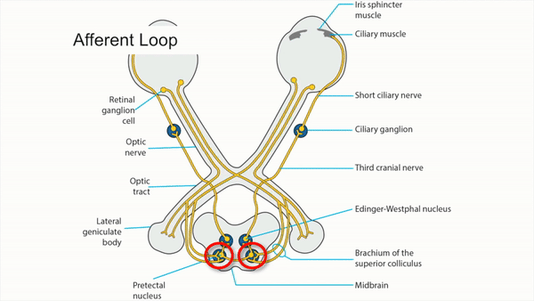
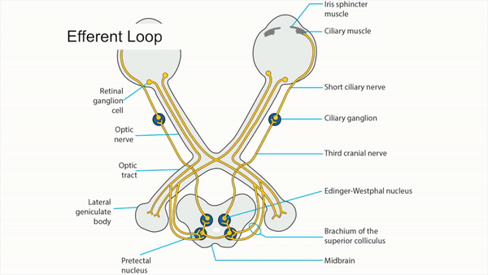
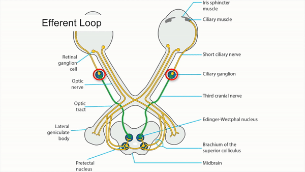
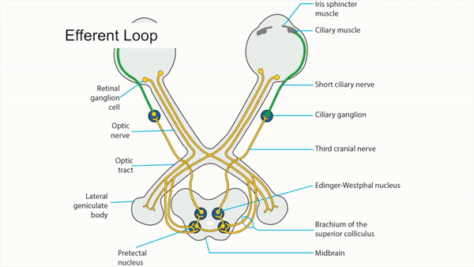
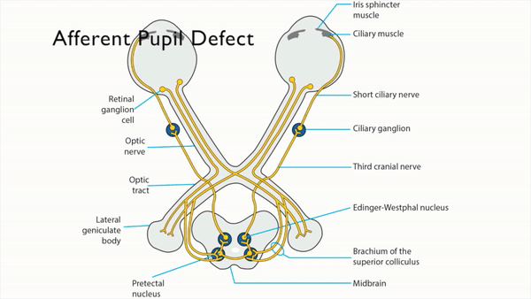
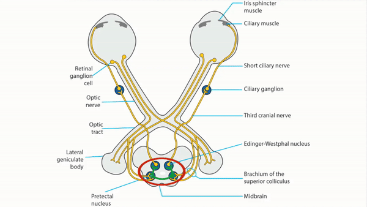
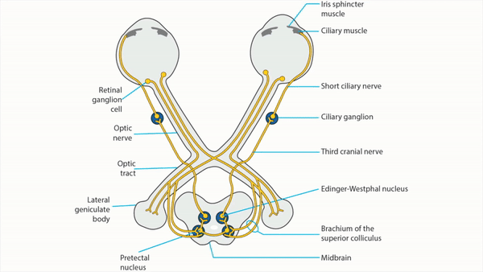
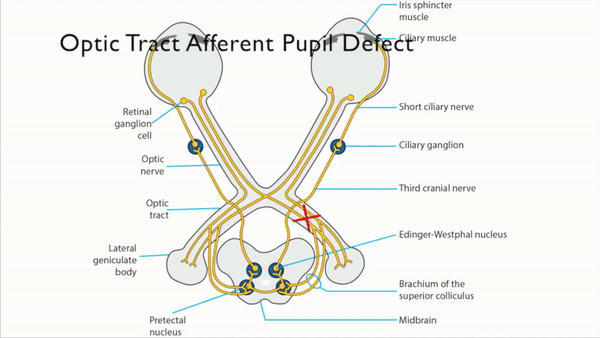
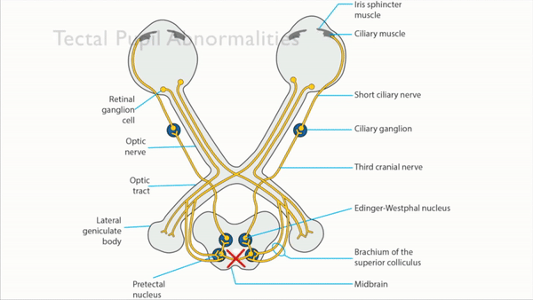
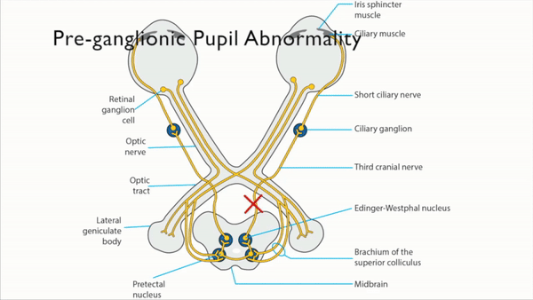

Parasympathetic Pathway
- Light shined in the eye stimulates retinal photoreceptors and intrinsically photosensitive retinal ganglion cells
- Signal travels in the retinal ganglion cell axons through the optic nerves, optic chiasm, and both optic tracts
- Signal branches off in the brachium of the superior colliculus to synapse in the dorsal midbrain pretectal nuclei on both sides
- Axons leave the pretectal nuclei and cross to nuclei on the other side of the dorsal midbrain, so that the afferent signal is distributed equally to both Edinger-Westphal nuclei
- Pre-ganglionic axons from the Edinger-Westphal parasympathetic nuclei carry signals in both third cranial nerves to the ciliary ganglia in both orbits
- Post-ganglionic axons leaving the ciliary ganglia in the short ciliary nerves carry signals to both iris sphincters for pupil constriction and to both ciliary bodies for accommodation





-
Lesion of one optic nerve
- Produces an afferent pupil defect Afferent Pupil Defect
- Reduces ipsilateral pupil constriction to light but preserves constriction to a target placed within reading distance because awareness of a near target stimulates a cerebral pathway that bypasses the dorsal midbrain and connects directly to the Edinger-Westphal nuclei (“afferent light-near dissociation”)
-
Lesion of both optic nerves
- Reduces pupil constriction in both eyes to light stimuli
-
Trap: an afferent pupil defect will not occur when there is equal damage to both optic nerves
- Preserves pupil constriction to a near target (“afferent light-near dissociation”) Afferent Light Near Dissociation
-
Lesion of one optic tract
- Produces a contralateral afferent pupil defect because optic chiasm crossing axons outnumber non-crossing axons
- Produces a contralateral homonymous hemianopia
-
Lesion of one brachium of the superior colliculus
- Produces a contralateral afferent pupil defect
-
Trap: does not cause a visual field defect because a lesion here does not interrupt the visual pathway
- Lesion of the dorsal midbrain
-
Lesion of the third nerve
-
Produces
- Mydriasis and impairment of pupil constriction to light
- Ptosis
- Ocular ductional deficits
-
Trap: third nerve lesions never produce mydriasis as an isolated clinical abnormality
-
Produces
-
Lesion of the ciliary ganglion or post-ganglionic ciliary nerves
-
Produces
- Mydriasis
- Poor pupil constriction to light and slow segmental constriction to target placed near the eye ("tonic light-near dissociation")
- Slow redilatation of the pupil after prolonged viewing of a near target Tonic AIdes Pupil
- Pupil constriction following instillation of dilute pilocarpine eyedrops
-
Tip: tonic features are diagnostic of a postganglionic (orbital) lesion and preclude the need to investigate for an intracranial process
-
Produces





